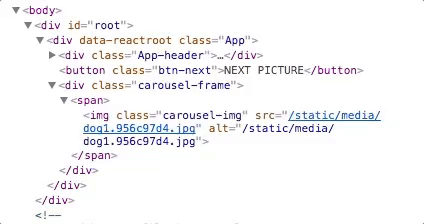
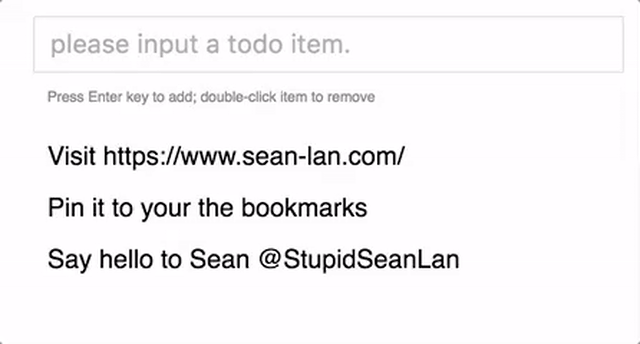
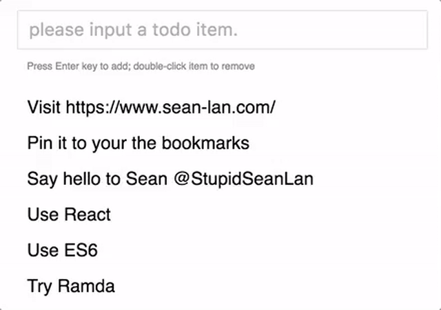

CSS Animation and the Usage with React
I have been busy with hacking React in the last week. React is declarative, which means that all you need to do is to define the state, implement the render() method, and React will make the component be what it shoud be. No DOM manipulation like find, insert, and delete. But there’s a problem if you want to make some animation when the component shows. When used with jQuery, you can add a CSS class to an element to change some style after the element shows. However, it’s hard to do so because React performs all the DOM operation and it’s better not to access the DOM node directly. Good news is that React does offer some hooks to help you implement transitions and animaitions, and this post will discuss them by examples.
We’ll first go through properties and common usages of CSS transition and animations, and then learn how to use then with React. After that, Some common mistakes will be discussed to help you better understand React.
Let’s take a look at CSS transition first.
CSS Transition
Before CSS 3 introduces transition, nearly all the animations are make with JavaScript. For example, you need to find the DOM node first, and modify the CSS properties then. Although some libraries like jQuery do offer some handy functions to help you, the performance is not as good as pure CSS animations and too many style related JavaScript code will make your project a mess. With CSS transition, you just specify the duration when some certain CSS properties have changed, and CSS enigine will make it happen smoothly.
Basic Usage
The following is an example to change the background color when the cursor hovers. We only need to specify the propery we want to the transition happen (here, background-color), the duration (here, 1s) and the timing function (ease-in-out, discuss it later):
Transition Properies
There are 4 properties related to a transition: transition-property, transition-duration, transition-timing-function and transition-delay. transition-property specifies which CSS property triggers a transition when it gets changed; transition-duration is the time the transition exists; transition-timing-function describes how fast the CSS propery varies during the transition; and transition-delay is the amount of time to wait between a change being requested to a property that is to be transitioned and the start of the transition effect. For transition-timing-function, you can use cubic-bezier function and steps to get fine-grained control the transition velocity. You may find cubic-bezier.com/ helpful to customize cubic-bezier.
Normally, you can put the four properties in a line:
|
|
You can specify different transition properties for different CSS properties with comma separated:
|
|
The above transition definition specify three separate transitions for height, width and background-color.
Also, you can set transition-property as all if you want the transition rule to be applied to all the CSS properties:
|
|
You can simply remove all transition rules of the element by setting transition as unset:
|
|
Here is a feigned secrect envelope animation with width, background-color and color:
When the envelope get hovered, it will expand for 1 second, and after that, the envelope’s background color and font color will change in 2 seconds.
CSS Animation
Though CSS transition is handy in making animations, it still has the following contraints:
- You can only set the start and end state of a transition and have no control of the transition process
- You cannot pause the transition once it starts
- You cannot specify the rounds of the animation
To some extend, CSS animation extends CSS transition by defining transition in frames.
Basic Usage
To use CSS animation, there are two steps:
- Define the animation keyframes
- Use the keyframes
The following trembling example demos the basic usage of CSS animation. It first defines the trembling keyframes, then use it in a animation CSS property:
Keyframe Syntax
Keyframes are defined with an @keyframes keyword with frame list block, each list item is the CSS properties that will apply from that point:
|
|
By “apply from that point”, I mean, the new CSS properties will override the previous and take effect from then on. For example, from the start (0%) to 50%, the background-color is #333 and from 50% to the end (100%), the background-color is #e33.
Animation Properties
The following animation is a very comprehensive usage of animation CSS property:
|
|
The animation CSS property is a shorthand property for animation-name, animation-duration, animation-timing-function, animation-delay, animation-iteration-count, animation-direction, animation-fill-mode and animation-play-state, and serveral of them are similiar with transition, so we’ll discuss some animation-specific properties.
animation-iteratoin-countspecifies how many times an animation should play, whose valid value includesinfinite, and number. When it’sinfinite, the animation will repeat forever; when it’s number, it’ll repeat exact the number times, and you can even pass a float value to it to make it only play part of an animation (e.g, 0.5 will play half of the animation cycle). The following spring animation plays 4 times, i.e, two up-down rounds (you may click Edit in JSFiddle or refresh the page to re-run the animation because it only runs once here).
animation-directionindicates the direction the animation should play, the default value isnormal, which means the animation plays forward. You can usereverseto make it play in the reverse direction and usealternateoralternate-reverseto make the direction changes alternatively. The above spring example hasalternate-reversedirection, and it first play backward, then forward, then backward, and finally forward.animation-fill-modespecifies how a CSS animation should apply styles to its target before and after it is executing. It has four valid values:none: The animation will not apply any styles to the target when it’s not executing; it will instead be displayed using its state based on all other CSS rules applied to it.forwards: The target will retain the computed css value by the last keyframe when the animation ends. Here, the last keyframe is decided byanimation-iteration-countdnanimation-direction.backwards: The animation will apply the values defined in the first keyframe when the animation applies to the target, and this during theanimation-delayperiod. The first keyframe depends on the value ofanimation-direction.both: The animation will follow the rules for both forwards and backwards, thus extending the animation properties in both directions.The spring animation sets
animation-fill-modeasboth, you can see, in the 3-second delay time, the target div has green background and 1.2 times the height as defined in the 100% keyframe because itsanimation-drectionisalternate-reverse, and after the animation ends, the target div still remains the computed values defined in the last keyframe due toanimation-iteration-countas 4 andanimation-directinasalternate-reverse.
animation-play-statedetermines whether an animation is running or paused, with two valid values:runningandpaused. It can be queried to determine whether or not the animation is currently running. In addition, its value can be set to pause and resume playback of an animation:
We add animation-play-state: paused when the trembling div get hovered so that it stops trembling and calms down.
Animation with jQuery
Now we have our keyframe-base animation defined, and it works well. However, there’s still one problem: the animation just runs once at the very beginning, and we want to control it. The basic idea is simple, every time we want to apply the animation, we just need to add the animation class to the div and remember to remove the class when it finishes:
|
|
Since the animation has 3-second delay and 4 2-second rounds, we should remove the CSS class after 11 seconds.
Animation in React
React isn’t in favor of manipulating DOM directly, but it offers hooks for helping you achieve the desired transition effort. The ReactCSSTransitionGroup is widely used for creating transition and animation. It will add several useful CSS class to the DOM node when its child element is added or removed. Let’s see an carousel example to see how it works.
As the above gif shows, we want to slide in every new picture and at the same time slide out the old one. We wrap the img element into a ReactCSSTransitionGroup tag:
|
|

Everytime, the img‘s src property changes, React will add carousel-leave class to the old img and in the next tick add carousel-leave-active to it. Thus, we can use these two hook classes to achieve the sliding out effect:
|
|
At the same time, React will add carousel-enter class to the new img and in the next tick add carousel-enter-active to it. Now we can achieve the sliding in effect:
|
|
Also for the first picture coming along with ReactCSSTransitionGroup, if you want it has the sliding in effect, you can add transitionAppear={true} and transitionAppearTimeout={2000} to ReactCSSTransitionGroup. The first picture will have carousel-appear class when it appears and carousel-appear-active in the next tick.
Please note that the transitionAppearTimeout, transitionEnterTimeout and transitionLeaveTimeout should keep accordance with the transition-duration CSS property:
|
|
React will remove the classes it adds or the elements for you after the timeout specified as the properties of ReactCSSTransitionGroup and won’t care about the transition duration defined in the CSS file, so it’s your job to make them match. Please checkout the repository to learn more.
With CSS animation, you may not need to use all these hook classes and you would prefer to use the -enter with appropriate keyframed animations, since CSS animation itself defines the whole transition process. With the previous example, the CSS animation version may like this:
|
|
You can checkout this branch to see the difference.
Gotchas
The previous carousel example shows the basic usage with only one element. Things get much more complicated when you want to animate a list of elements. Don’t worry, we’ll go through two common mistakes here to save you time. To demo the usage with a list of elements, here we’ll write a TODO list much like the following:

Animation Group Must Be Mounted To Work
As the official doc puts it, ReactCSSTransitionGroup must already be mounted in the DOM or the prop transitionAppear must be set to true to make it take effect. The following code snippet won’t work because it mounts ReactCSSTransitionGroup with the li item at the same time:
|
|
You can add transitionAppear={true} and add proper transitionAppearTime to make the addition animation to take effect, but it’s possible to make removal animation happen in this way because ReactCSSTransitionGroup is blown away at the same time with the li item.
Therefore, embed the items in ReactCSSTransitionGroup:
|
|
Make key Prop Unique and DO NOT Reuse key
Sorry but I’ve made a mistake in the above the example, and if you run the above code, you’ll find the animation is totally a mess: the addition animation always apply to the last item in the list:

The reason is that we use the loop index i as the key and React DOM diff algorithm depends on the key to lower the complexity, and when we delete an item, React will find that only the element with the largest key is missing and add hook class to it. So, better use a global unique key to each element, like the id property of item:
|
|
The codes are available at my github, any feedback is welcome.
Conclusion
This post first introduces the syntax and basic usages with CSS transition and animation. With transition, we only need to specify which property should have the transition effect and its duration. When the property changes, CSS engine will help use make it happen. With animation, we need to specify the style state at certain timestamps with @keyframe syntax, and the animation CSS property grammar is very similar to transition. To use transition and animation, we need to add certain property at right time (often we use CSS class) and React offers ReactCSSTransitionGroup to add hook classes at property time. All we need is to wrap the components in ReactCSSTransitionGroup and use animation in appropriate classes. For most of the cases, ReactCSSTransitionGroup is enough. Read more about ReactTransitionGroup if you want to more fine-grained customization.